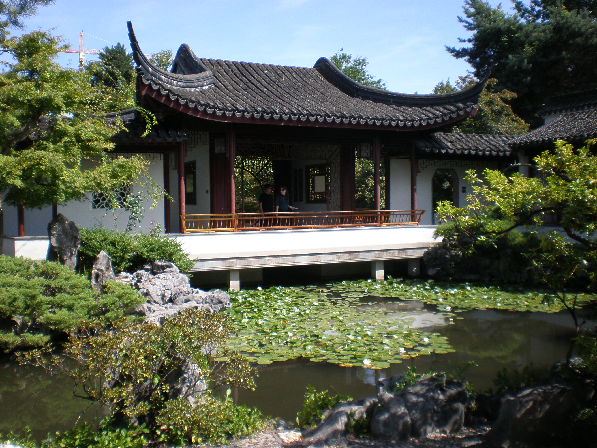

Blog
A Long Weekend in Vancouver, British Columbia (Date??)
Vancouver, BC is one of my favorite cities to go for a relaxed urban vacation with a
liberal helping of outdoor activities. It’s like Seattle (a city that I love) but somehow a little bit better –
maybe because it’s Canadian? In general I’m a pretty lazy, anti-exercise person, but something about Vancouver’s
parks and trails lures me to get onto a bike to feel the wind through my hair as I pedal along the beaches and seawall.
I’ve been to the city multiple times with family and for work, and I’ve loved every visit! My favorite time to go is
in the summer or fall when a casual outdoorsy person like myself can comfortably enjoy biking or walking on the beach
without too many layers. Honestly I would only go to Vancouver in winter for a ski/snowboard trip – the city is going
to be pretty dreary and wet from November to March.
My itinerary is organized by geographic location in the city and works well if you are staying somewhere in downtown
Vancouver or near the University of British Columbia (UBC). A car is useful to have in Vancouver, although walking and
biking is doable for the downtown core. Uber and other ride-share companies will hopefully be allowed to operate in Vancouver
soon, but it has not been an option on any of my trips.
Overview:
Day 1: Stanley Park, Vancouver Aquarium, Chinatown, Gastown, Coal Harbor
Day 2: Museum of Anthropology, VanDusen Botanical Garden or Pacific Spirit Regional Park, Kitsilano, Granville Island
Day 3: Lynn Canyon suspension bridge, Whistler
Day 1: Stanley Park & Downtown Vancouver
Stanley Park, Vancouver’s large urban park, has scenic bike trails, a seawall, beaches, aquarium, and more. Plan on spending at least a few hours exploring before heading into downtown. If you’re really anti-biking you can also drive the Stanley Park loop – there are a few parking lots where you can pull over to check out one of the beaches or viewpoints.
- Biking in Stanley Park
- Rent a bike for a few hours at one of the local bike rental places, or see if your hotel has bikes on loan. Denman Street has multiple rental shops and is close to the entrance for the Stanley Park bike trail.
- Price: Expect to spend $8-10 CAD per hour for a basic cruiser bike with a few gears. Helmet rentals also available for a few extra bucks.
- Head into Stanley Park and look for bike trail signs for the Vancouver Seawall. The bike trail goes counter-clockwise only, so you’ll be starting at the park’s east/northeast entrance. There’s a designated lane for walking/running and for bikes/roller blading.
- Vancouver Aquarium
- Great for families and interesting for adults too. Lots of Pacific Northwest animals like sea otters and sea lions are featured, in additional to exhibits for frogs, arctic animals, fish of the tropics, and more. Spend an hour or two with the fishes before you get back into the saddle for the Seawall bike loop.
- Lunch: The aquarium food court is an option with burgers, salads, sandwiches, and it sells alcohol too!
- Price: $38 CAD for adults
- Hours: 10am – 5pm
- Vancouver Seawall
- Keep an eye out for the public art along the way. I recommend the small detour towards the beginning to see the Totem Poles from local First Nations tribes.
- Beaches – there are three main beaches Third Beach, Second Beach, and English Bay Beach. They get busier the closer you return to the city. Consider bringing a picnic lunch to enjoy if you don’t want to eat at the aquarium.
- Detour into the rest of Stanley park if you want a longer bike ride. There are several lagoons and hidden gardens to find.
Chinatown, Gastown, and Coal Harbor areas
- Olympic Cauldron (Coal Harbor)
- Next to the Convention Center. Vancouver hosted the Olympic Winter Games in 2010. Not only was this the first time Canada won a gold medal while hosting the Olympics, but they also set a record for most gold medals won at a single Winter Olympics with 14 gold medals. *1
- Price: free (outdoors)
- Gastown Steam Clock (Gastown)
- Literally a clock powered by steam on the corner of Cambie and Water Street. Try to visit on the half hour or hour to see the steam mechanism at work.
- Price: free (outdoors)
- Dr. Sun Yat-Sen Classical Chinese Garden (Chinatown)
- A Beautiful sanctuary in the city, this garden is modelled after Ming Dynasty scholars’ gardens in China. As one of the top tourist attractions in Vancouver it can get crowded, but even with crowds you will still find yourself awed and soothed by the carefully designed lakes, landscapes, and buildings within the garden.
- Price: $14 CAD May – September, $12 CAD October – April. Guided tour included in ticket price.
- Hours: Winter 10am to 4:30pm, Spring 10am to 6pm, Summer 9:30am to 7pm, Fall 10am to 6pm.
- I found the further east areas of Chinatown to feel unsafe and pretty run down – not worth exploring unless you have a specific shop or restaurant you’re planning on visiting.
- Vancouver Art Gallery
- Worth visiting to see its permanent collections of art by local artists including Emily Carr, indigenous art from the region, contemporary art from Asia, and a photo collection. Check to see what the visiting exhibit is too.
- Price: $24 CAD for adults
- Hours: 10am – 5pm daily (until 9pm on Tuesdays)
- Dinner in the downtown area is easy, with all types of cuisine and budgets represented.
- Granville Island
- Farmers market + craft and art vendors. An alternative afternoon option if you don’t feel like exploring Chinatown, Gastown, and Coal Harbor areas. Otherwise save this for day 2. This can be a nice spot to have a meal.
- Getting here: you can drive, bike, bus, or walk to Granville Island, but maybe the most fun way to get here is by small ferry boat. Aquabus and False Creek Ferries both run routes all through the False Creek water way. A single way ticket could cost as little as $4, and there are round trip or full day tickets available too.
- Hours: 9am-7pmd daily (10am-6pm in winter).
Day 2: Southwest Vancouver
This area of Vancouver features mostly residential neighborhoods as well as several gardens and the University of British Columbia (UBC). While it is possible to bike here from downtown Vancouver, I only recommend this for intermediate or advanced bicyclists – there are a few major hills and tricky intersections to navigate. In other words, a casual biker like myself ended up walking her bike up the last, brutal hill. Start your day by driving to UBC.
- Museum of Anthropology
- At UBC, this museum has an amazing collection of cultural artifacts, especially First Nation pieces. Full confession: I was an anthropology major in college, so I might be biased, but I enjoyed this museum!
- Price: $18 CAD for adults
- Hours: 10am – 5pm (open until 9pm on Thursdays)
- Garden/park of your choosing
- VanDusen Botanical Garden
- An impressive showcase of different flowers, trees, and other plants from around the world. Feels like an oasis to hide away from the rest of the city. Nice romantic place for a date, walking hand in hand through the flowers.
- Price: $8 - $11.25 CAD depending on the season
- Hours: changes seasonally. In summer 9am – 8pm
- Pacific Spirit Regional Park
- A large forested park with trails good for hiking or biking (plus dog-friendly!). I confess to not yet having visited this park, but it seems like a great option for those wanting to get lost in an urban forest. Amenities include parking, restrooms, drinking fountain, picnic areas, and beaches. Certain areas of the park are also wheelchair accessible.
- Price: free
- Hours: changes seasonally. Roughly sunrise to sunset
- VanDusen Botanical Garden
- Lunch: Head towards Kit Point/Kitsilano neighborhood to find food options along Broadway and 4th Ave.
- Kitsilano Beach Park
- Sandy beaches, grassy lawn, outdoor pool, and restroom facilities make this a nice place to hang out for a bit. All of Vancouver thinks so too, so plan on crowds if the sun is out.
- Museum option (if you’re up for another one)
- Vancouver Maritime Museum
- This museum was built in a pyramid shape to house multiple full-size ships with masts. Documents the maritime history of the Pacific Northwest and the Arctic.
- Price: $13.50 CAD
- Hours: 10am-5pm daily (open until 8pm on Thursdays)
- Museum of Vancouver
- Exhibits on Vancouver’s history from the 1900s to 1970s and Haida (First Nation) art & artifacts.
- Price: $20.50 CAD for adults
- Hours: 10am – 5pm M/T/W/Sun, open until 8pm on Thursday and 9pm on Friday and Saturday.
- Vancouver Maritime Museum
- Granville Island option (if you didn’t go yesterday)
Day 3: Day Trip North
Vancouver is the urban gateway to expansive natural parks, mountains, and canyons all within reasonable driving distance. Take the Trans-Canada Highway/BC-1 to exit Vancouver and head first to Lynn Canyon Park, then continue to spend the day at Whistler.
- Lynn Canyon Park
- Suspension bridge – a lot of people head to the Capilano Suspension Bridge (137 meters long) nearby, but it’s over $45 for adults! The Lynn Canyon suspension bridge is not as long or quite as high up, but it’s free!
- Hiking trails of varying difficulties and lengths are waiting for you to explore too.
- Price: free. Visit the Ecology Center for $2 donation
- Hours: Winter 7am-6pm, Spring 7am – 7pm, Summer 7am – 9pm, Fall 7am – 7pm
- Drive along the scenic Sea to Sky Highway (Hwy 99) to Whistler (about 1.5 hours).
- Whistler
- This could be a whole multi-day trip by itself, but you can also squeeze in a lot of fun into one day, including:
- Hiking
- Peak 2 Peak Gondola (expensive, but recommended!)
- Whistler Village – restaurants & shopping + Olympic rings for a selfie
- More adventurous options like ziplining or helicopter tours exist too
- Price: depends on what you do. Parking is $5-10 per vehicle.
- Hours: The gondolas run from 10am – 5pm in summer. The Whistler Village shops and restaurants stay open later for dinner afterwards
Alternate Sights/Activities
- Bill Reid Gallery – gallery of art by famous Haida modern artist Bill Reid.
- Biking along False Creek, in Pacific Spirit Regional Park, or seawall east of Stanley Park – there are so many great biking options!
- Kayaking or sailing in the sound
- Whale watching tour
- Winter skiing/snowboarding/snow shoeing
Souvenir Ideas
- Growers Cider – do not leave Canada without trying this cider! I dream about my next sip of this cider, especially in the summer – it’s carbonated, crisp, and delicious. I haven’t been able to find it in a US liquor store yet, so I’m limited to how many 6-packs I want to take through Customs when I drive back to Washington state.
- Item with First Nation symbolic animals on it – I have coasters at home with whale and crow symbols on them. Red, black, brown, and white colors are typical.
Where to Stay
Vancouver has lots of great hotels to stay at throughout the downtown area. It is a bit on the expensive side, though for Americans the currency conversion from Canadian to U.S. dollars will usually work in your favor. Here are some hotels that I have stayed at that I would recommend:
- Pinnacle Hotel, Harbourfront – 4-star hotel in the Coal Harbor neighborhood, walking distance to lots of restaurant options as well as the waterfront. Amenities include complimentary bikes to borrow, plus a pool, gym, and restaurant. I even got a discounted room rate as a Washington state resident. Double/queen bed room rates anywhere from $125 USD - $300+ depending on season. If you’re in Vancouver for an event at the Convention Center, this is a great location.
- Hampton Inn & Suites – 3-star hotel right across from the BC Place sports stadium and close to Chinatown. Free breakfast and a whirlpool were my favorite amenities as well as having a small microwave and refrigerator in the room to actually be able to store, heat up, and eat leftovers for example. Double/queen bed room rates from $150 USD - $300+ depending on the time of year.
- Sylvia Hotel – 3-star hotel in an historic 1912 apartment building blocks away from English Bay and Stanley Park. Some of the rooms are more like hotel rooms while others are apartment-style or even suites with kitchens. The hotel also features a relaxed restaurant with an outdoor seating space looking out towards the Bay. Room rates from $135 USD - $270 depending on room size and season. I’d recommend this hotel for vacations in order to have easy access to Stanley Park.
Where to Stay
There are so many great places to eat in Vancouver, and you will find all kinds of cuisines represented. Denman Street and Robson Street are both hotspots for tons of restaurants. Here are a few Vancouver restaurants that I enjoyed:
- Cactus Club Café, English Bay – this is a Canadian chain restaurant serving a good variety of seafood, burgers, salads, chicken, and other globally-inspired dishes as well as cocktails. The location right off the beach of English Bay can’t be beat. Happy hour is hopping, and the place becomes pretty lively on warm summer evenings when people come for the great food and great views.
- Koyuki Sapporo Ramen – a cozy little ramen place just off Robson street in the Coal Harbour neighborhood. A great option for an inexpensive but filling meal, especially on a cold rainy day.
- Urban Fare – just need a quick bite to eat? This gourmet grocery store chain has 3-4 locations in Vancouver with a cafeteria where you can dine-in or take out for breakfast, lunch, or dinner. Options are minimal but inexpensive if you’re trying to save money to splurge on other things.
- White Spot – a British Columbia chain to try out; they have 9 locations just in Vancouver. This restaurant has so many mouth-watering options on their menu that I had a hard time choosing what to order. They’re especially famous for their burgers.
- Olympia Pizza & Pasta Restaurant – the name is a bit deceiving, as this restaurant has Greek food specialties in addition to pizza and pasta options. The portions are very generous, so you won’t leave here hungry!
Vancouver


Aquarium

Local Artwork


Rock Stacking

Olympic Cauldron

Dr. Sun Yat-Sen Classical Chinese Garden
Granville Island

Ferry to Granville

Museum of Anthropology


VanDusen Botanical Garden


Maritime Museum

Museum of Vancouver


Lynn Canyon Park Bridge and Trails


Whistler Hikes and Views


Bill Reid Gallery
Lake View

Rock Stacking